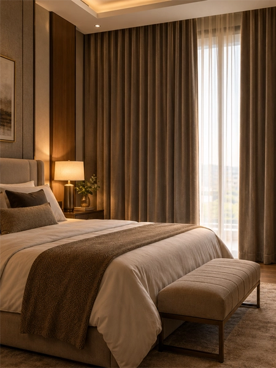
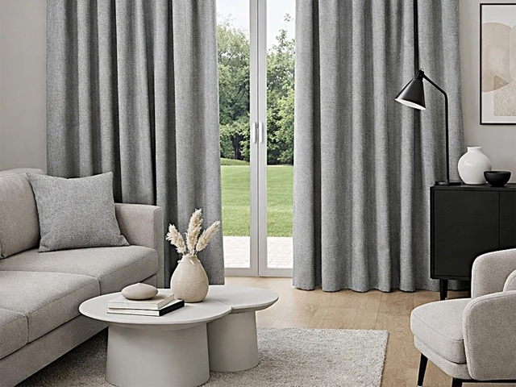

01 / Residential


Residential curtains in Bangladesh
Your windows decide how much light, privacy, and heat a room gets, and the curtains hanging over them decide how well it works. In Bangladesh, strong sun, monsoon humidity, city dust and close-set buildings all affect which fabric and fit will last.
Curtain Canvas creates residential curtains in Bangladesh that fit your home's interior, your windows, and your daily routine. We handle the whole job: design guidance, fabric shortlisting, precise measuring, tailoring, and installation.
Talk to our consultantBy room and home style
Every room asks something different of its curtains. These are the options we most often plan for homes across Bangladesh.
For a Bangladeshi home
Choosing the right curtains for a Bangladeshi home means balancing style with the realities of our climate: intense sunlight, heavy monsoon humidity, and dust from busy city streets. The best choice comes down to matching fabric, light control, and maintenance needs for each room so your curtains look good and last through the seasons.
Comfort, privacy and protection
The right curtains do more than dress a window: in Bangladesh’s strong sun and monsoon humidity, they control heat and glare, protect your furniture from fading, and give you privacy in closely built neighborhoods. A well-chosen fabric also resists mildew and wear, so your curtains stay fresh and functional through every season.
Curtain Canvas
Curtain Canvas helps Bangladeshi homeowners find curtains that suit their space, from expert consultancy and fabric presentations to onsite visits and trial hanging. Every recommendation is shaped by local conditions like strong sun and monsoon humidity, so you get a result that looks right and lasts.
Call for residential curtainsResidential curtain questions